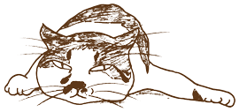
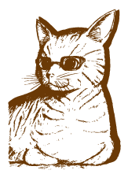

日本大学文理学部 地球科学科
地震火山教育研究部門／火山・岩石学領域
平成27年度 火山・岩石学研究室 所属学生
大学院生 M2：2名
４年生：14名
３年生：13名

●教育研究の目標（準備中）
教育研究の目標に関する文章が入る予定です。教育研究の目標に関する文章が入る予定です。教育研究の目標に関する文章が入る予定です。教育研究の目標に関する文章が入る予定です。教育研究の目標に関する文章が入る予定です。教育研究の目標に関する文章が入る予定です。教育研究の目標に関する文章が入る予定です。教育研究の目標に関する文章が入る予定です。教育研究の目標に関する文章が入る予定です。教育研究の目標に関する文章が入る予定です。教育研究の目標に関する文章が入る予定です。
●研究室略史（準備中）
●卒業テーマ研究
「卒業テーマ研究」では，浅間，桜島，富士山などの諸火山の地質学的、岩石学的検討を通じて、地下のマグマプロセスや噴火の様式，火山体のでき方などの解明に取り組んでいます。
実際の作業はテーマによって様々です。次のように，さまざまなスケールでの観察や各種分析を行います．自分自身でデータを出すことを重視しています．
- 野外での火山噴出物の観察
- 空中写真による火山地形判読
- 顕微鏡下での岩石組織の観察
- 岩石試料の化学分析
- 岩石の古地磁気測定

画：M.Takahashi
高橋 正樹たかはし・まさき
- 東京大学 理学部 地質鉱物学科卒
- 東京大学 理系大学院 博士課程修了
茨城大学理学部地球科学科・地球生命環境科学科助教授・教授を経て現在日本大学文理学部地球システム科学科教授（この間，アメリカ合衆国スミソニアン自然史博物館客員研究員，通産省工業技術院地質調査所研究官併任などを務める）
関心のある分野：火山テクトニクスとマグマ供給システム・マグマ溜りプロセス・マグマ活動とテクトニクス場の関係・火山体形成史（プロキシマル火山地質学）・大規模珪長質マグマ活動の成因・カルデラの内部構造・花崗岩の成因と大陸地殻の進化・花崗岩マグマの上昇メカニズム・地質環境の長期安定性と高レベル放射性廃棄物の地層処分など
専門：火山学・岩石学・地質学

安井 真也やすい・まや
- 日本大学 文理学部 応用地学科卒
- 日本大学大学院 理工学研究科地理学専攻
博士後期課程修了
小学５年生まで熊本で阿蘇火山を見て育つ。日本大学文理学部の応用地学科に入学してすぐに日本火山学会に入会。学生時代は国内外の火山を夢中で見て回る。大学院博士後期課程では、浅間火山天明噴火の推移と様式の研究に取り組む。修了後、文理学部に就職、現在に至る。
関心のある分野：浅間火山をメインのフィールドとして、安山岩質マグマの噴火の推移や噴火様式についての研究を行っています。特に火口近傍でのマグマ噴出過程や火山体の形成過程に興味があり（プロキシマル火山地質学）、野外スケールから顕微鏡スケールまでの噴出物の観察・記載をすすめています。桜島火山やハワイのキラウエア火山などとの比較も通じて、噴火メカニズムの理解にも貢献できればと考えます。
専門：火山学(火山地質)

金丸 龍夫かなまる・たつお
- 茨城大学 理学部 地球生命環境科学科卒業
- 神戸大学大学院 自然科学研究科
地球環境科学専攻 博士後期課程修了
高校まで甲府盆地から御坂山地越しに見える富士山を位置座標の中心として過ごす．このため，今でも南側が頭中の地図の上になってしまうことがある（山梨県民の特徴らしい）．学生時代は，南部フォッサマグナ地域の火成岩体の形成過程について研究．
関心のある分野：深成岩やマグマ溜りの形成に関連した話題に興味を持っています．最近では，火山噴出物の磁気特性から，噴火・定置過程が明らかにならないかと，あれこれ検討しています．さらに，最近では，南極の岩石の風化に関する研究も行っています．．
専門：地質学、岩石・鉱物・鉱床学